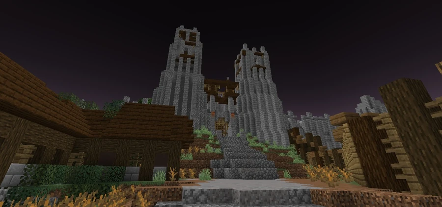
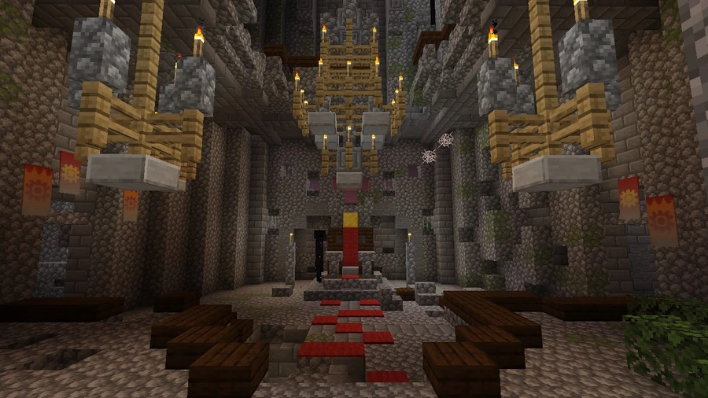

Ruined Castle
−1367, 64, 1111
A medieval fortress in the swamps northwest of Broville. Three enclosures, a village and a port form the complex associated with Heraldus and the legends of the Black Mother.
The fortress in the swamp
The castle is an isolated medieval fortress in the swamps northwest of Broville, described as sinister and notable for an unusual concentration of Endermen. The reference point for the complex is −1367, 64, 1111; the community description also uses the nearby point −1365, 64, 1109. These are two references for the same complex, separate from the cavern entrance.
The structure is divided into three enclosures linked by gates operated through lever mechanisms. Towers surround the perimeter, including one entirely isolated in the sea. Deterioration is extensive; the interpretation that some damage resulted from heavy attacks is a hypothesis about the condition of the ruins.
Enclosures and facilities
- First enclosure: wooden defenses and open, largely barren ground dotted with giant mushrooms.
- Second enclosure: remains of the old village and port, evidence of the settlement beside the fortress.
- Third enclosure: the largest and most fortified area, with a central tower, library, throne room, chapel and a dungeon described as a place of torture.
The port and extensive storage areas suggest the settlement's economic scale. Community readings of these spaces and signs of opulence propose a prosperous past, but do not establish why the kingdom was abandoned. Rumors also circulate about priceless treasures in the castle's lower levels.
Heraldus and the Founder
Tradition associates the site with King Heraldus, a reign in crisis and his search for the Eye of Arburaz. The community account speaks of a disappearance during the expedition; the available documents do not turn that wording into a confirmed ending for the king.
Another figure associated with the site's past is the Founder, presented as older and as leader of the Knights of The Founder, an order of dark knights. The precise identification of these figures, the relationship between their eras and the kingdom's fall remain unclear.
The isolated tower and the Black Mother
The Black Mother belongs to the legends of the swamp. A tradition attributed to documents in the municipal library describes her as a three-headed creature born from occult magical rites and living at the top of the isolated tower. The same narrative says the tower had not been reached for centuries and that the dangers of the swamp discouraged expeditions. These claims form part of the site's legend without confirming the creature's presence.
Reference point for the expedition
Heraldus's journal places the descent in a stone building in the swamp with a north-facing entrance. Community documentation places the cavern entrance at −1414, 63, 1069. The fortress reference point and this entrance serve different purposes in the expedition route.
Gallery






See also
Sources and references
- v11.4.4 maps, signs, books and items World records
- The castle · Broville Wiki Community archive
- Journal 1 — H. World book
Text adapted and expanded from The castle (contributors and history, revision 5107). Adapted text is available under CC BY-SA 3.0.